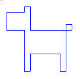
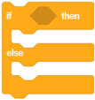
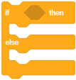

Let’s Draw - Turtle Graphics¶

In the previous lessons, we learned how we could move the sprite by using our mouse and keyboard. Now, we will learn how we can make our sprite leave a mark while moving. We will use various examples to explore the functions of blocks from the group called Pen, which allow the sprite to leave a mark on the stage when it moves. This type of drawing is called turtle graphics. We have also learned how we can synchronize the behavior of our sprites by adding wait blocks to their scripts. In this lesson we will show a more efficient way of doing this - synchronizing sprites by exchanging messages.
Turtle Graphics
Scratch is one of the modern programming languages that include turtle graphics options, introduced for the first time in the Logo language some fifty years ago.
Logo enabled the control of a turtle device, a type of robot, which was connected to the computer. The turtle could move on a horizontal surface back and forth and change its direction and orientation. If a piece of paper was placed under the turtle, it could leave a mark, thus forming graphics called the turtle graphics.
This way of setting an image as a collection of figures, together with their data (parameters), which define how the figure will be drawn and where it will be placed is called vector graphics.
Unlike the vector graphics, in the raster graphics the image is stored as a rectangular grid of pixels - bitmaps. Bitmaps are technically characterized by the width and height of the image in pixels, and the number of bits needed to store the color of the pixels. For example, if there are only 16 colors, you need 4 bits per pixel to store the color. Raster graphics are resolution- dependent. They cannot be enlarged without the loss of quality of the image.
In Scratch, every sprite has the option to behave like the Logo turtle: you can determine their position, direction and orientation of movement, and they can leave a mark when they move. The size, the shape and the color of the sprite do not affect the mark they leave, because the sprites are drawing with a pen. The sprite can also be invisible or composed of only one dot, and this does not affect its drawing.
Functions of the Pen blocks
The Pen group of blocks, which enable the sprites to leave a mark when they move, i.e. to support the turtle graphics are located among the extensions.
In order to use blocks from this group, you need to:
Click on the
 icon in the bottom left corner of the blocks palette.
icon in the bottom left corner of the blocks palette.Select the Pen extension from the opened gallery.
The icon and the blocks will appear in the blocks palette.

The Pen group includes the following blocks:
|
|
 - stamps the image of the sprite on the stage
- stamps the image of the sprite on the stageIf you add the block to your sprite, from then on, the sprite will leave a mark on the stage whenever it moves. When you add the  block, it will stop leaving the mark until you add the block again. The look of the mark is determined by the drawing parameters. The drawing parameters include the size (thickness), color, saturation, brightness and transparency of the mark left by the pen.
block, it will stop leaving the mark until you add the block again. The look of the mark is determined by the drawing parameters. The drawing parameters include the size (thickness), color, saturation, brightness and transparency of the mark left by the pen.
Note. 

 . The first block refers to drawings and the second to the sprites.
. The first block refers to drawings and the second to the sprites.
Using messages for synchronization
The behavior is always triggered by an event, which can be an action or receipt of a message. In the previous lessons and projects, we used the wait block when we wanted to synchronize the behavior of our sprites. In the “Calculation” project we enabled our girl and boy sprites to have a synchronized conversation - when the girl was speaking, the boy was listening and vice versa.
We will now show how the actions of the sprites (and the stage) can be coordinated, depending on whether a broadcast message event has occurred.
You noticed that we didn’t say that we send a message, but that we broadcast it. This is because, in Scratch, the message is directed to all objects, and not just one. Broadcasting and receiving messages in Scratch is achieved with the following blocks  , and
, and  from the Events group.
from the Events group.
 Study the following examples¶
Study the following examples¶
Example 1 - Project “Drawing a Line”¶
We will create a project in which we will draw a line that is 10 pixels wide and 300 pixels long. We will choose the Pencil sprite from the sprites library, and we will delete the cat sprite. Since we want the mark to be positioned along the tip of the Pencil sprite, we will move the center of the costume to the top. We can do this by opening the Costume tab. The available tools will appear on the left side of the drawing display; in our case, these will be vector tools because we chose a vector sprite (1). Use the  to select the whole sprite (2), and then drag the sprite so that the tip of the pencil is above the sign
to select the whole sprite (2), and then drag the sprite so that the tip of the pencil is above the sign  which indicates the center of the screen (3).
which indicates the center of the screen (3).

First, you need to erase everything that was previously drawn by using the block, place the pencil in the starting position from which it will start drawing, set the color, and the size of the pen, and then use the pen down block to allow the pencil sprite to leave a mark when it moves. You need to add the pen up block at the end to stop the sprite from leaving a mark in the process of returning to the starting position, each time the program runs.
There are two ways to set the color of the pen:
by using the
 block, where you can select a color by clicking on the input field
block, where you can select a color by clicking on the input fieldby using the
 block, where you can select a color by inserting a number into the second input field.
block, where you can select a color by inserting a number into the second input field.
In this project, we will use the first option.

Clicking on the input field of the block for setting the pen color, we open the drop-down menu where we will find sliders with color components: number attached to the color, saturation and brightness, and at the bottom we will see a tool - a pipette for collecting color samples (1). The desired color can be set by moving the sliders or by clicking on the pipette. If you click on the pipette, a stage with a magnifier on it that has a circle in the center will light up (2). To choose a color, we need to place the center of the circle above the part of the stage where that color is located and then click on it. We will get the same result, as shown in Figure (3).
Note. You can find more information on the HSB color mode, which uses the components: hue, saturation and brightness, in the part Appendix.
The result of the running of the script and the script itself are presented in the Figure below.

Example 2 - Project “Free-hand Drawing”¶
This project should illustrate how we use drawing commands and show that the mark does not depend on the size of the sprite, nor on whether the sprite is visible or hidden. The pen is doing the drawing, so it does not matter which sprite is holding it. This time we will choose the Ladybug 1 sprite from the sprites library.
The script, which is activated by clicking on the green flag, allows the ladybug to follow the mouse-pointer for the duration of the running. At the beginning of the script, all drawings from previous running of the project will be erased from the stage, and the pen will be raised. The pen down command will be added to the when down arrow is pressed event block, and the pen up command will be added to the when up arrow is pressed event block. This way we will make sure that the sprite will not leave any marks when it moves until we press the down arrow key. The sprite will stop leaving marks when we press the up arrow key.
The scripts added to the ladybug are presented in the Figure below. The drawing would be performed the same way even if the block was inserted where the red arrow in the Figure is pointing, but then the sprite wouldn’t be visible, and it would appear that the drawing is being done by the mouse-pointer.

Of course, it would be more natural if we didn’t have to press the keys of the keyboard to lower and lift the pen, but just draw while holding the mouse button pressed, and then stop drawing by lifting the finger. This type of drawing is achieved by the following script.

The effects of the if then else command will be elaborated in the lesson number 6 of this manual. For now, let’s just say that the script in this E-block will either execute the  and
and pen down command from the upper slot, or the pen up from the lower slot. Which command is being executed will depend on whether the mouse button is pressed or not, which is determined by the value set in the  block. This block belongs to the Sensing group, and it reports whether the value is true or false. Hexagonal function blocks that report only the values true or false are called Boolean blocks.
block. This block belongs to the Sensing group, and it reports whether the value is true or false. Hexagonal function blocks that report only the values true or false are called Boolean blocks.
Example 3 - Project “Follow my Trace”¶
In this project, the movement of the ladybug is guided by the use of arrow keys, like in example 3, of the Stage Coordinates lesson. The mark left by the ladybug is a broken line made of horizontal and vertical lines. The following Figure includes the project scripts and the look of the stage after one project execution.
Every whole number from the interval [0,199] corresponds to a particular color. For example, 0 is red, 30 is yellow, 70 green, 130 blue, and 170 magenta. Color numbering in Scratch is based on the order of colors in the spectrum.

Upgrading the project
We will change the project so that the sprite that we will use for drawing moves more freely, like in example 4 of the Stage Coordinates lesson. We will add the setting which will allow the color and size of the pen to change in a random manner every 5 seconds, this way we will create a more attractive mark. To set the pen color randomly, we will have to use a different command to the one we used in the previous example. This time we will use the block, where the color is set by a number.
The following figure represents a script that sets the initial values and the appearance of the stage after the modified project finished running (the script is activated by clicking on the green flag). The repeat forever block contains commands that set the color and size of the pen in a “random” manner.

The following example shows how we can draw different styles of lines for underlining, by using the repetition command to specify the number of times an action is repeated, which we will introduce in the next lesson.
Example 4 - Project “Lines”¶
In the Lines project we will draw a purple line, 400 pixels long and 2 pixels wide, starting from the point (-200,0) in five different styles.

The sprite drawing the line is invisible. It will appear in the upper left corner of the stage, only when it finishes drawing the line, and it will say how the line was drawn.
The drawing is activated by the  event block, the script for the first style is activated by pressing number 1 on the keyboard, the second style by pressing 2, and so on.
event block, the script for the first style is activated by pressing number 1 on the keyboard, the second style by pressing 2, and so on.
Clicking on the green flag erases everything that was previously on the stage, sets values for the color and size of the pen, sprite appears and gives instructions on how to start the project.
Each of the scripts associated with keys 1-5 on the keyboard first erases everything that was previously drawn on the stage, hides the sprite, draws the line in the given style, and then shows the sprite in the upper left corner of the stage, which tells us how the line was drawn.
The first style is a continuous straight line. This can be done immediately, by giving just one command “go 400 steps”, but to make this last almost as long as other scripts we added the repeat command, so the sprite would move 10 steps 40 times.
The second style - the sprite repeats the same pattern 100 times: it moves 1 step with the pen down, and 3 with the pen up.
The third style - the sprite repeats the same pattern 50 times: it moves 3 steps with the pen down and, and 5 with the pen up.
The fourth style - the sprite repeats the same pattern 40 times: it moves 6 steps with the pen down and, and 4 with the pen up.
The fifth style - the sprite repeats the same pattern 25 times: it moves 6 steps with the pen down and, and 4 with the pen up, 2 steps with the pen down, and 4 with the pen up.
In the Figure below you will find the scripts for the events when the green flag is clicked, when 1 key is pressed, and when 2 key is pressed.

Note that repetition commands do not shorten program running time, but only allow the programmer to write programs more clearly and concisely.
Example 5 - Project “The Family”¶
In this project, a Chick is introducing its family: mother hen, father rooster, brother, and sister. At the beginning we only see one chick we named Lisa, and the rest of the sprites are hidden. First, Lisa introduces her mother, Marge. When she says her name, the mother will appear and broadcast that she is there. Then, Lisa introduces her father, Homer. Homer also appears when he “hears” his name, and then “answers” with a message containing his name. Her brother Bart and her sister Maggie are introduced to the stage in a similar fashion. The synchronization of the sprite appearances and broadcasting is achieved with messages. When Lisa introduces someone, she broadcasts the message. The sprites are “listening”, and when they receive the appropriate message, they appear and broadcast a message announcing their name. When Lisa receives that message - response, she continues with the introduction of the next family member.
The following Figure shows how the appearances of the sprites are synchronized with messages.

Sprite preparation
 For this next presentation you will need the following characters: Lisa, Marge, Homer, Bart and Maggie. For Lisa, Bart and Maggie we will use the Chick sprite, for the mom we will use the Hen sprite, and for the dad, we will use the Rooster sprite from the sprites library. Once you have added the sprites, change their names so they correspond to our project.
For this next presentation you will need the following characters: Lisa, Marge, Homer, Bart and Maggie. For Lisa, Bart and Maggie we will use the Chick sprite, for the mom we will use the Hen sprite, and for the dad, we will use the Rooster sprite from the sprites library. Once you have added the sprites, change their names so they correspond to our project.
 Select the Farm backdrop from the backdrop library.
Select the Farm backdrop from the backdrop library.
 Place the Lisa sprite in the middle in the upper part of the stage.
Place the Lisa sprite in the middle in the upper part of the stage.
 Place the Marge sprite in the lower left part, and put Maggie, who you need to make smaller, next to her.
Place the Marge sprite in the lower left part, and put Maggie, who you need to make smaller, next to her.
 Place the Homer sprite in the lower right part of the stage and turn him so he is facing to the left. Make the Bart sprite larger and place him between Maggie and his dad, and turn him so he is facing to the left.
Place the Homer sprite in the lower right part of the stage and turn him so he is facing to the left. Make the Bart sprite larger and place him between Maggie and his dad, and turn him so he is facing to the left.
The scripts added to the sprites are presented in the following Figure.

 Did you understand?¶
Did you understand?¶
Question 1¶
- yes
- The Logo programming language introduced the turtle graphics.
- no
- Correct.
Q-14: Scratch is the first programming language to introduce the turtle graphics options.
Question 2¶
- yes
- No, the first one refers to the drawings, and the second to the sprites.
- no
- Correct.
Q-15: The block erase all from the Pen group has the same function as the block hide from the group Looks.
Question 3¶
- yes
- Correct.
- no
Q-16: If you add the pen down block to a script of a particular sprite, it will continue to leave a mark when moving.
Question 4¶
Q-17: Which of the blocks belong to the Pen group of blocks? (Select all correct answers)

Question 5¶
Q-18: Each of these blocks changes something. Which one will change the mark left by the pen while drawing? (Select all correct answers)

Question 6¶
- the pen down block is not activated
- the pen up block is activated
- the sprite is hidden
- the block erase all is activated
Q-19: In some programs the sprite doesn’t leave a mark when moving? Why does this happen? (Select all correct answers)
Question 7¶
-
By dragging the rectangles, pair the blocks with the groups they belong to.
Try again
- hide
- Looks
- erase all
- Pen
- ask_and wait
- Sensing
- point towards
- Motion
Question 8¶
-
Every whole number in the interval [0,199] corresponds to a color.
By dragging the rectangles, pair the colors with their code number.
Try again
- red
- 0
- yellow
- 30
- green
- 70
- blue
- 130
 Try it!¶
Try it!¶


{kind=link}
{kind=link}
{kind=link}
Exercise 2¶
Create a script which will enable the following drawing.
Move the sprite to the position (-50,30), put the pen down, than add blocks which enable following relative movements:
1 →, 1 ↓, 2 →, 1 ↑, 1 →, 2 ↓, 4 ←, 2 ↑.
The entry 5 → means that the sprite should move 10 steps to the right 5 times, and the entry 1 ↑ that the sprite should move 10 steps up 1 time. For adding motion commands, we will also use the signs ← and ↓.
Exercise 3¶
Create a script, which will only use the absolute motion commands (and the pen down commands) for drawing the same image as in the exercise 2 program.
Exercise 4¶
Graphic Dictation 1
This is the first of the graphic dictation exercises. First, you will have to do a bit of programming,and enter a lot of data from the keyboard. Later, this type of task will require more programming, and a lot less data entry.
Create a project, which allows you to guide the sprite with the arrow keys on your keyboard, like in example 3 of this lesson:
the right arrow moves the sprite 10 steps to the right,
the left arrow moves the sprite 10 steps to the left,
the up arrow moves the sprite 10 steps up,
the down arrow moves the sprite 10 steps down.
Make sure that the sprite is hidden and the stage is cleared.
Move the sprite to the position (-50,30), this is going to be the starting point, put the pen down, then type the following series of arrows:
1 →, 1 ↓, 2 →, 1 ↑, 1 →, 2 ↓, 5 →, 2 ↑, 1 ←, 1 ↑,
2 →, 8 ↓, 1 ←, 2 ↑, 1 ←, 2 ↓, 1 ←, 2 ↑, 3 ←, 2 ↓,
1 ←, 2 ↑, 1 ←, 2 ↓, 1 ←, 3 ↑, 1 ←, 4 ↑.
If you followed the instructions well, you should return to your starting point.
What did you draw?
{kind=link}
Exercise 5¶
Graphic Dictation 2
All settings from the Graphics Dictation 1 still apply, but the algorithm for drawing is the following:
Move the sprite to the starting point (-60,40), put the pen down and draw:
3 →, 1 ↑, 1 →, 4 ↓, 6 →, 1 ↑, 1 →, 1 ↓, 1 ←,
7 ↓, 1 ←, 3 ↑, 5 ←, 3 ↓, 1 ←, 7 ↑, 3 ←, 3 ↑.
If you followed the instructions well, you should return to your starting point.
What did you draw?
Answer:

{kind=link}
 Debug it!¶
Debug it!¶
Bug 1¶
- Question
The pupil has written a program which is supposed to draw a line 300 pixels long, where the first 100 pixels are red, second 100 pixels are green, and the last 100 pixels are blue.
When he ran the script nothing happened. What is the problem?

Answer:
The block was not added.
Bug 2¶
- Question
The pupil has written a program which is supposed to draw a blue line 300 pixels long, where the first 100 pixels are 10 pixels wide, second 100 pixels are 20 pixels wide, and the last 100 are 30 pixels wide. When he first ran the program everything was fine, but every time after that when he would run the programme the line was alway 30 pixels wide. What is the problem?

Answer:
At the end of the first run, the size of the pen is set at 30, the pen is located at the end of the line in the spot (200,0), and it is not up. Therefore, when the program runs for the second time, the pen will go back to the starting position with the pen size set at 30 pixels, so if it draws over the same mark with a smaller pen size the new mark won’t be visible. The mistake will be corrected if the pen is lifted up before it goes back to its starting position.
Bug 3¶
- Question
The pupil has written a program which is supposed to draw a blue line 300 pixels long, where the first 100 pixels are 10 pixels wide, second 100 pixels are 20 pixels wide, and the last 100 are 30 pixels wide. Every time he/she ran the program the mark was the same, not with the required size changes, but much larger. What is the problem?
{kind=link}
Answer:
The  command should not have been used with the parameters 20 and 30, but with increasing the size by 10, or instead of that command use the
command should not have been used with the parameters 20 and 30, but with increasing the size by 10, or instead of that command use the  block with the parameters 20 and 30.
block with the parameters 20 and 30.
 Summary¶
Summary¶
In this lesson, we introduced the turtle graphics, which represent an example of the vector graphics. In Scratch, every sprite has a pen with which it can draw while moving on the stage. This virtual pen has the shape of a round brush, and we can change its size, color, saturation, brightness and transparency. With different examples and exercises we learned how to use and connect Motion and Pen blocks to create different drawings. We have also learned how to use commands for repetition to create scripts which are shorter and more efficient. The commands for repetition will be further elaborated in the next lesson. In the last example, we showed how we could synchronize the behavior of the sprites by exchanging messages. The mechanism of exchanging messages can also be used for the realization of procedures, which will be explained in the next lesson.
Scratch projects: 4Studio
New concepts: turtle graphics, vector and raster graphics, color coding, broadcasting and receiving messages.
Scratch commands:  - , , , ,
- , , , ,  , , ,| ; -
, , ,| ; -  ;
;
 - ,
- ,  ;
;  - , , ;
- , , ;
 - ,
- ,  .
.
Note. Blocks marked with the sign will be discussed in the lessons that follow.
 Create a projects¶
Create a projects¶
Project 1 - “Lightning”¶
Create a project where the Lightning sprite will draw with its tip. Once you have added the sprite from the sprites library, set the center of its costume to be on the top. Add scripts which define how it should move and set the drawing parameters.
Project 2 - “Black and White World”¶
Create a project based on the “Free-hand Drawing” project. The stage should have a black backdrop. You can make the backdrop black by using tool in the raster mode of the paint editor to pour black paint on the desired backdrop. The sprite doing the drawing should be hidden, and the pen color should be white.
Project 3 - “My Family”¶
Start a new project which you will call My family. This should be an animation introducing the members of your family. For this presentation, you will need the following sprites: presenter (you), mom, dad, brother, sister (depending on the actual members of your family). Use photos or select images of sprites, which will represent the members of your family and customize them to fit the project (make them smaller or larger, arrange them around the stage and turn them, if necessary). All sprites should hide when the green flag is clicked and wait until they are introduced by the presenter and then appear on the stage in the previously set position. Synchronize the appearance of the sprites by using messages, as shown in the example “Family”. The presenter is the only sprite appearing on the stage the whole time. He/she will say his/her name first, and then introduce the rest of the family.